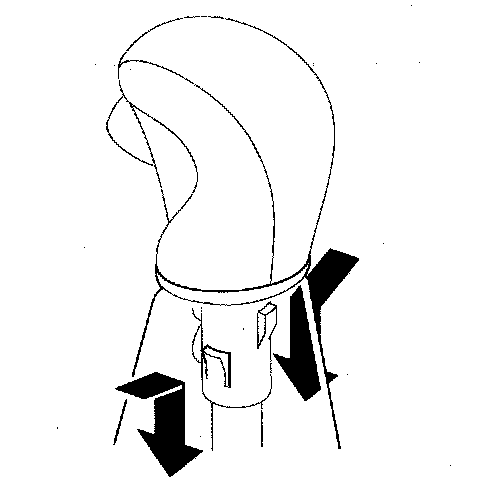
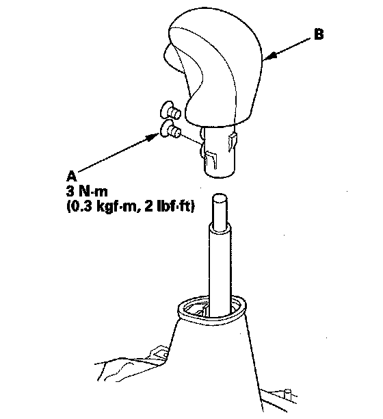
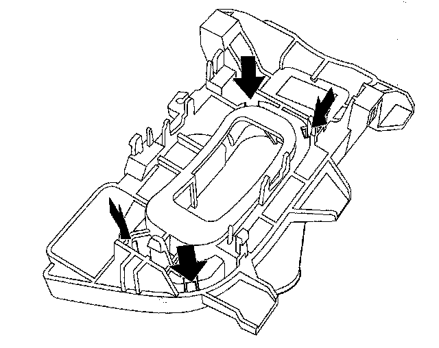
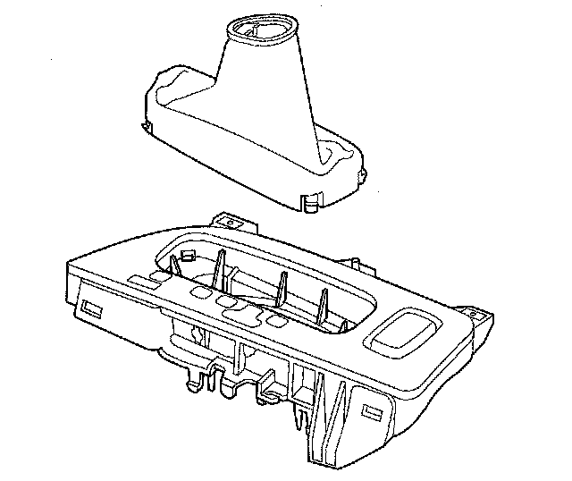

Shift Lever Boot and A/T Gear Position Indicator Panel Replacement
Shift Lever Boot and A/T Gear Position Indicator Panel Replacement1. Remove the shift lever.
2. Grasp the shift lever boot ring, and slip it out of the shift lever knob cover.

3. Remove the screws (A), and remove the shift lever knob (B).

4. Remove the A/T gear position indicator panel light socket from the indicator panel, and remove the indicator panel from the shift lever bracket base.
5. Release the lock tabs retaining the shift lever boot using a screwdriver.

6. Replace the shift lever boot or A/T gear position indicator panel, and install the boot in the indicator panel.

7. Install the A/T gear position indicator panel on the shift lever bracket base, and install the indicator panel light socket in the indicator panel.
8. Apply non-hardening thread lock sealant to the screw threads, install the shift lever knob, and secure it with the screws.
9. Slide the shift lever boot ring over the shift lever knob until it snaps on.
10. Install the shift lever.